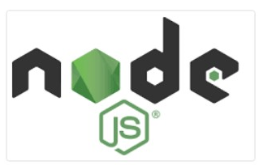
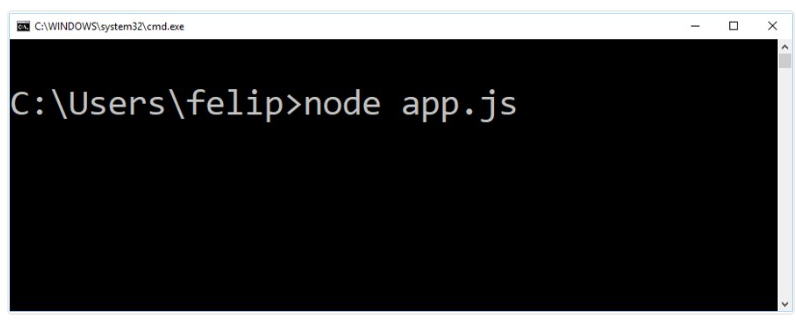

Node.JS

O Node.js é basicamente uma ferramenta que executa o JavaScript fora do navegador.
Quando instalado, chamamos o Node.js pelo terminal.

Na imagem acima estamos mandando o Node.js executar o código existente no arquivo “app.js”.
Como não estamos executando o JavaScript em um navegador, os cuidados com segurança são diferentes.
Há várias funcionalidades disponibilizadas para o Node.js, fazendo com que possamos fazer coisas com JavaScript que não conseguimos fazer quando o nosso ambiente é o navegador.
Um exemplo é o acesso a arquivos. Um código JavaScript no navegador não consegue acessar os arquivos do usuário, pois seria uma falta de segurança você entrar em um site e ele vasculhar seu computador.
Como o Node.js está instalado em sua máquina, o JavaScript tem liberdade de acessar os arquivos contidos no HD.
O Node.js possibilitou a criação de várias outras ferramentas para podermos usar JavaScript fora do navegador, e hoje em dia é um conhecimento obrigatório para quem quer trabalhar com JavaScript.

O Node.js vem com o “npm” (node package manager). Com ele podemos gerenciar as dependências de nossos projetos.
Um exemplo: caso queira usar jQuery em seu projeto, ao invés de ter o trabalho de fazer download do jQuery, basta executar o comando “$ npm install jquery”.
Caso queira atualizar a versão do jQuery em seu projeto, basta executar o comando “$ npm update jquery”.
O npm também pode ser usado para instalar outros programas que podem nos auxiliar no desenvolvimento de nossas aplicações e executar comandos.